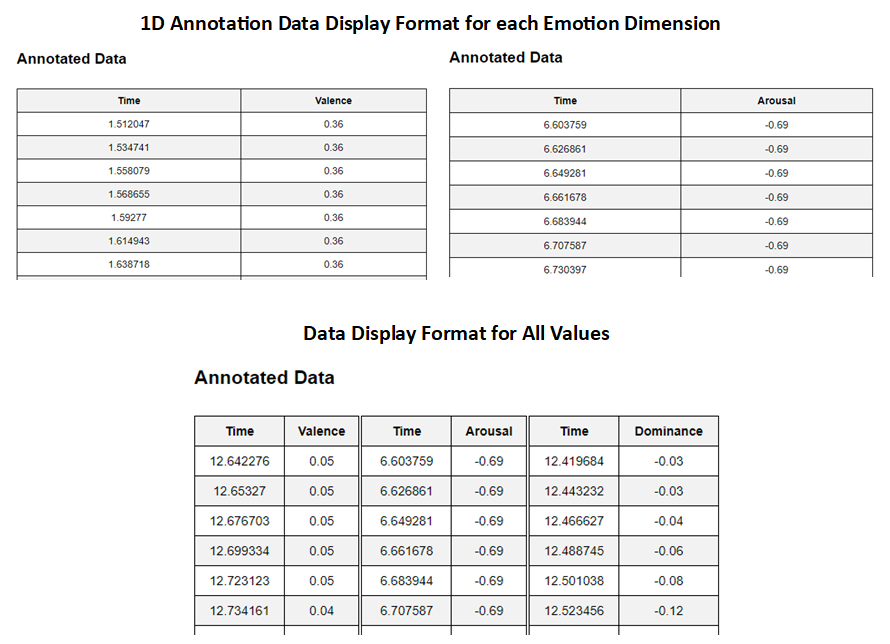

<!DOCTYPE html>
<html>
    <head>
        <title>About 1-D emotion model</title>
    </head>
    <script src="https://kit.fontawesome.com/a076d05399.js" crossorigin="anonymous"></script>
    <link href="aboutStyle.css" rel="stylesheet" type="text/css" />
    </html>
    <body>
    <div class="about_container">
        <h3>Instructions for annotating Emotion in Speech</h3>
        <hr>
        <h4><i>Using One-dimensional (1-D) Emotion Model</i></h4>
        <ol>
            <li>Start playing a video/audio file.</li>
            <li>As you watch or listen to the media file, pay close attention to the emotional qualities expressed by the speaker.</li>
            <li>Interact with one slider at a time, adjusting it to the most appropriate position based on your understanding of the specific emotional dimension.</li>
            <br>
            <ul>
                <li><strong>Valence slider</strong>: Adjust the "Valence" slider to reflect the pleasantness or unpleasantness of the emotion conveyed. Move it left for negative valence and right for positive valence based on your interpretation of the emotional content.</li><br>
                <li><strong>Arousal slider</strong>: Adjust the "Arousal" slider to capture the intensity or level of activation of the emotion conveyed. Move it left for low arousal and right for high arousal based on your perception of emotional intensity.</li><br>
                <li><strong>Dominance slider</strong>: Adjust the "Dominance" slider to indicate the level of control or power associated with the emotion conveyed. Move it left for low dominance (independent) and right for high dominance (dependent) as you perceive shifts in the speaker's perceived control.</li><br>
            </ul>
            <li>Once you have finished watching or listening to the media file, data for each slider dimension (Valence, Arousal, and Dominance) will be recorded automatically. </li>
            <li>Click 'View Data' button to display all the annotated data for the corresponding slider. <br>
            You can proceed to save the current annotated data if you are satisfied with the current values.</li>
            <li>Repeat steps 3-5 for each emotional dimension, adjusting one slider at a time based on your perception.</li>
            <li>Once you have finished annotation, you can save the annotated data of all three emotion dimensions at once. Click the “Save all current values as CSV” button at the bottom.</li>
        </ol>
        <p><strong>Note</strong>: Remember to adjust each slider independently, focusing on one emotional dimension at a time, to accurately capture the perceived intensity, valence, and dominance of the emotions expressed throughout the content.</p>
        <br>
        

    </div>
</body>
